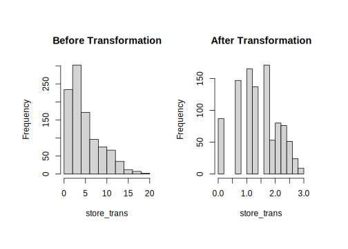

5.4 Resolve Skewness
Skewness is defined to be the third standardized central moment. The formula for the sample skewness statistics is: \[ skewness=\frac{\sum(x_{i}-\bar{x})^{3}}{(n-1)v^{3/2}}\] \[v=\frac{\sum(x_{i}-\bar{x})^{2}}{(n-1)}\] Skewness=0 means that the destribution is symmetric, i.e. the probability of falling on either side of the distribution’s mean is equal.

FIGURE 5.1: Example of skewed distributions
There are different ways may help to remove skewness such as log, square root or inverse. However, it is often difficult to determine from plots which transformation is most appropriate for correcting skewness. The Box-Cox procedure automatically identified a transformation from the family of power transformations that are indexed by a parameter \(\lambda\)(Box G 1964).
\[ x^{*}=\begin{cases} \begin{array}{c} \frac{x^{\lambda}-1}{\lambda}\\ log(x) \end{array} & \begin{array}{c} if\ \lambda\neq0\\ if\ \lambda=0 \end{array}\end{cases} \]
It is easy to see that this family includes log transformation (\(\lambda=0\)), square transformation (\(\lambda=2\)), square root (\(\lambda=0.5\)), inverse (\(\lambda=-1\)) and others in-between. We can still use function preProcess() in package caret to apply this transformation by chaning the method argument.
describe(sim.dat) vars n mean sd median trimmed mad ...
age 1 1000 38.84 16.42 36 37.69 16.31
gender* 2 1000 1.45 0.50 1 1.43 0.00
income 3 816 113543.07 49842.29 93869 104841.94 28989.47
house* 4 1000 1.57 0.50 2 1.58 0.00
store_exp 5 1000 1356.85 2774.40 329 839.92 196.45
online_exp 6 1000 2120.18 1731.22 1942 1874.51 1015.21
store_trans 7 1000 5.35 3.70 4 4.89 2.97
online_trans 8 1000 13.55 7.96 14 13.42 10.38
...It is easy to see the skewed variables. If mean and trimmed differ a lot, there is very likely outliers. By default, trimmed reports mean by dropping the top and bottom 10%. It can be adjusted by setting argument trim=. It is clear that store_exp has outliers.
As an example, we will apply Box-Cox transformation on store_trans and online_trans:
# select the two columns and save them as dat_bc
dat_bc <- subset(sim.dat, select = c("store_trans", "online_trans"))
(trans <- preProcess(dat_bc, method = c("BoxCox")))## Created from 1000 samples and 2 variables
##
## Pre-processing:
## - Box-Cox transformation (2)
## - ignored (0)
##
## Lambda estimates for Box-Cox transformation:
## 0.1, 0.7The last line of the output shows the estimates of \(\lambda\) for each variable. As before, use predict() to get the transformed result:
transformed <- predict(trans, dat_bc)
par(mfrow = c(1, 2), oma = c(2, 2, 2, 2))
hist(dat_bc$store_trans, main = "Before Transformation",
xlab = "store_trans")
hist(transformed$store_trans, main = "After Transformation",
xlab = "store_trans")
Before the transformation, the stroe_trans is skewed right.
BoxCoxTrans () can also conduct Box-Cox transform. But note that BoxCoxTrans () can only be applied to a single variable, and it is not possible to transform difference columns in a data frame at the same time.
(trans <- BoxCoxTrans(dat_bc$store_trans))## Box-Cox Transformation
##
## 1000 data points used to estimate Lambda
##
## Input data summary:
## Min. 1st Qu. Median Mean 3rd Qu. Max.
## 1.00 3.00 4.00 5.35 7.00 20.00
##
## Largest/Smallest: 20
## Sample Skewness: 1.11
##
## Estimated Lambda: 0.1
## With fudge factor, Lambda = 0 will be used for transformationstransformed <- predict(trans, dat_bc$store_trans)
skewness(transformed)## [1] -0.2155The estimate of \(\lambda\) is the same as before (0.1). The skewness of the original observation is 1.1, and -0.2 after transformation. Although it is not strictly 0, it is greatly improved.